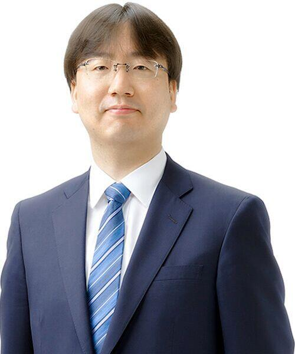

古川俊太郎（Furukawa Shuntarou）1994年（平成6年）毕业于早稻田大学政治经济学院并加入任天堂。2015年担任经营企划室长，2016 年任董事。 东京都出身。此前，古川俊太郎长期就任于经理部门，2015年就任经营企划室长。参与制定游戏机与软件的贩卖计划，并为2017年3月发售的Nintendo Switch的大卖做出贡献。曾在德国的欧洲任天堂总部驻扎10年，对于海外的业务经验丰富。
古川氏1994年毕业于早稻田大学政治经济学院后进入任天堂供职，1998年后担任该社旗下子会社宝可梦公司的社外取缔役。 当时古川在宝可梦公司的顶头上司——是君岛达己，正是这段共事数年的经历让君岛对这位年轻下属出众的工作能力留下深刻印象。
古川俊太郎年少时曾在德国求学多年，在2002年以后被调往欧洲协助NOE（欧洲任天堂）总裁柴田聪负责市场开拓工作，在其常驻德国十年时间里，任天堂产品在该地域的市场占有率由上世纪末的不到8%跃升到Wii/NDS时期的峰值63%，今依然在欧盟诸国中保持仅次于法国的市场地位。
调回本社后，古川先后被委任经营企划室长、营运本部总监兼常务董事和全球市场行销总监等职。
他曾经参与游戏机和软件的销售计划拟定，并为Nintendo Switch的热销做出了贡献。